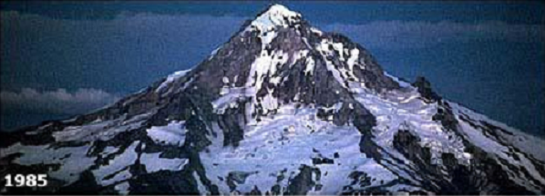
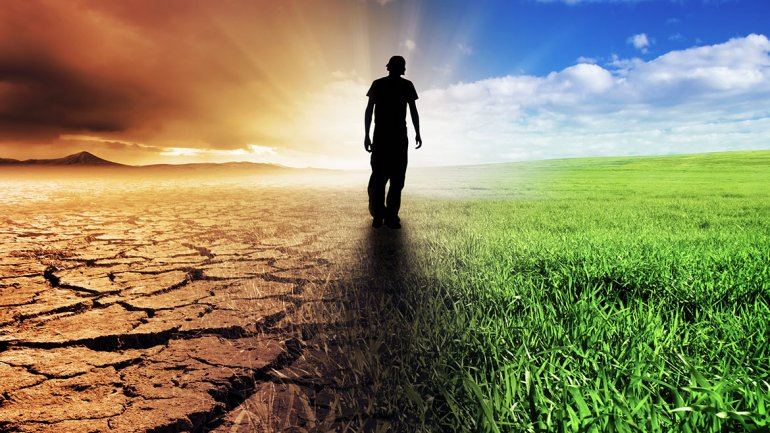

El Día de la Tierra es un día celebrado en muchos para crear una conciencia común a los problemas de la superpoblación, la producción de contaminación, la conservación de la biodiversidad y otras preocupaciones ambientales para proteger la Tierra. Es un día para rendir homenaje a nuestro planeta y reconocer a la Tierra como nuestro hogar y nuestra madre, así como lo han expresado distintas culturas a lo largo de la historia, demostrando la interdependencia entre sus ecosistemas y los seres vivos que la habitamos.
22 de Abril
En el año 1970 y con la participación en EE.UU de 20 millones de personas, su promotor, el senador estadounidense Gaylord Nelson, instauró este día para crear una conciencia común.
Es el deber de todos cuidar el medio ambiente para vivir en un ambiente sano y equilibrado ecológicamente. Existen varias formas de cuidado como por ejemplo:
-Manejo de los bosques.
Protección de los suelos y reforestación.
Reducción de la pesca excesiva.
No desperdiciar los recursos como el agua o las áreas verdes de los que otros se pueden favorecer y así contribuir al equilibrio del planeta.
Reducir, reciclar y reutilizar. Principalmente las cosas de vidrio, papel y plástico, aunque también puede aplicarse a las pilas alcalinas.
Antes de tirar cualquier cosa a la basura, piensa si se puede reutilizar, reciclar o reparar, o si puede ser útil para otra persona.
Reducir: Acciones para reducir la producción de objetos susceptibles de convertirse en residuos, con medidas de compra racional, uso adecuado de los productos, compra de productos sostenibles,etc...
Reutilizar: Acciones que permiten el volver a usar un determinado producto para darle una segunda vida, con el mismo uso u otro diferente. Medidas encaminadas a la reparación de productos y alargar su vida útil
Reciclar: Conjunto de operaciones de recogida y tratamiento de residuos que permiten reintroducirlos en un ciclo de vida. Se utiliza la separación de residuos en origen para facilitar los canales adecuados.

-Antes de tirar cualquier cosa a la basura, piensa si se puede reutilizar, reciclar o reparar, o si puede ser útil para otra persona.
-Evita las latas de bebidas, vale más el envase que su contenido y apenas se recuperan.
-La energía que producen las pilas es más de 600 veces más cara que la de la red. Conecta los aparatos a la red siempre que esto sea posible. Nunca tires las usadas a la basura)
-Desconecta los aparatos eléctricos de la red cuando no están funcionando.
-Prescinde de los electrodomésticos innecesarios como cepillos de dientes, abrelatas, cuchillos eléctricos, etc.
- Usa bombillas LED que duran mucho más que las bombillas tradicionales y que inclusiva las fluorescentes. Son de bajo consumo de energía para dar la misma cantidad de luz.
-Evita los aerosoles que contienen CFCs y que son causantes de la destrucción de la capa de ozono, u otros gases que también contribuyen al efecto invernadero.
-La gran mayoría de los productos de limpieza que se anuncian no sólo son innecesarios sino también muy nocivos para el medio ambiente.
-Evita usar productos agresivos: limpiahornos, lejía, etc., que impiden los procesos biológicos de depuración del agua. Nunca tires productos tóxicos, pintura o aceite de cocinar al desagüe.
Para ahorrar agua, instala un sistema de doble descarga en el inodoro, ya que vaciar la cisterna entera supone gastar de 10 a litros. Repara los grifos que gotean.
-Aprovecha bien el papel: úsalo por las dos caras, utilízalo reciclado
-Dejar de utilizar elautomivil
Diferentes tipos de contaminación están clasificados por su parte que afectan o resultan por las causas de contaminación particulares. Cada uno de estos tipos tiene sus propias causas y consecuencias distintivas. El estudio de la contaminación ambiental ayuda a entender los conceptos básicos con mayor detalle y producir protocolos para los tipos específicos. En consecuencia, los principales tipos de contaminación son:
Como su nombre lo sugiere, “Contaminación del agua” es el tipo de contaminación que supone la contaminación distintos cuerpos de agua. Varias criaturas acuáticas dependen de estos cuerpos de agua y sus características naturales nutritivos para apoyar su vida. Contaminación del Agua

La contaminación del aire altera la composición química y natural del aire. La respiración es un proceso importante para la vida de todos los seres vivos. Por lo tanto, si el aire que nos rodea está contaminado con gases venenosos, tendría un efecto fatal en nosotros.
Suelo pelado de su fertilidad natural mediante el uso de sustancias químicas artificiales, como los pesticidas, insecticidas, etc maduración agentes que se conoce como “contaminación del suelo”. Las plantas dependen de los compuestos nitrogenados presentes en el suelo para su nutrición. El uso de insecticidas, pesticidas y otras sustancias químicas artificiales absorbe el nitrógeno del suelo por lo que es apto para el crecimiento de las plantas. Las plantas son responsables de mantener el suelo de una manera firme así, cuando las plantas no pueden crecer divide el suelo, lo que conduce a la erosión del suelo.
Aumento de la temperatura en el ecosistema debido a la liberación de energía de calor excesivo en el medio ambiente por métodos artificiales o desastres naturales que se llama “La contaminación térmica”. El dióxido de carbono tiene una propiedad de bloquear el calor salga de la atmósfera y por lo que el calor que viene del sol es atrapada en la atmósfera.
Contaminación radiactiva se produce cuando “RADIACTIVO” desintegrarse liberando metales peligrosos rayos beta que pueden causar cáncer y otras enfermedades mutativas.
Hay diferentes cualidades de los sonidos. Los sonidos que no son agradables de oír se llaman “ruidos”. Así que un exceso de ruido en el exterior conduce a la “contaminación acústica”. Esto puede ser experimentado por bocinazos demasiados vehículos en las carreteras, maquinaria pesada está operando a la intemperie.
El exceso de luz en la retina provoca gran incomodidad en los ojos, especialmente en condiciones de poca luz, como durante la noche. Las luces brillantes tensión de los ojos y también le dan dolores de cabeza y migrañas.
A la fecha han habido muchos cambios y avances paulatinos en la opinión científica, política y pública sobre el cambio climático y el calentamiento global.
El Cambio Climático es un cambio significativo y duradero de los patrones locales o globales del clima, las causas pueden ser naturales, como por ejemplo, variaciones en la energía que se recibe del Sol, erupciones volcánicas, circulación oceánica, procesos biológicos y otros, o puede ser causada por influencia antrópica (por las actividades humanas), como por ejemplo, a través de la emisión de CO2 y otros gases que atrapan calor, o alteración del uso de grandes extensiones de suelos que causan, finalmente, un calentamiento global.
El Calentamiento Global es un aumento de la temperatura de la atmósfera terrestre que se ha estado observando desde finales del siglo XIX. Se ha observado un aumento de aproximadamente 0.8 ºC desde que se realizan mediciones confiables, dos tercios de este aumento desde 1980. Hay una certeza del 90% (actualizada a 95% en el 2013) de que la causa del calentamiento es el aumento de gases de efecto invernadero que resultan de las actividades humanas como la quema de combustibles fósiles (carbón, gasolina, gas natural y petróleo) y la deforestación.
Utilización de catalizadores en los coches para disminuir los gases contaminantes que despiden.
Empleo del transporte público y medios ecológicos para contaminar menos.
Recuperación de aguas: se pueden recuperar de forma química a través de tratamientos biológicos, con organismos que descomponen la materia orgánica en nitrato y en dióxido de carbono.
Eliminación de acumulación de nutrientes en lagos pequeños: estos nutrientes provienen de restos de plantas muertas que podrían provocar eutrofización del agua.
No abusar de fertilizantes y pesticidas en cultivos y cosechas: para poder eliminar el nitrato del suelo se utilizan métodos biológicos como el cultivo de bacterias desnitrificantes.
Reciclar es una actividad en la que todos podemos colaborar: separar los materiales de forma correcta y procurar que su recogida selectiva se realice en el punto de origen para no contaminar al transportarse.
Evitar hacer ruidos molestos: porque la contaminación sonora es una de las causas principales de molestias a nivel psicológico como el estrés.
Al comprar productos para el hogar, procurar que sean lo menos contaminantes posible.
Reforestación: recuperar áreas donde se ha producido una tala indiscriminada de árboles y plantas.
agua y buscar métodos para reciclarla: el agua que utilizamos en los hogares se puede reutilizar.
Uso de energías alternativas como la solar y la eólica.